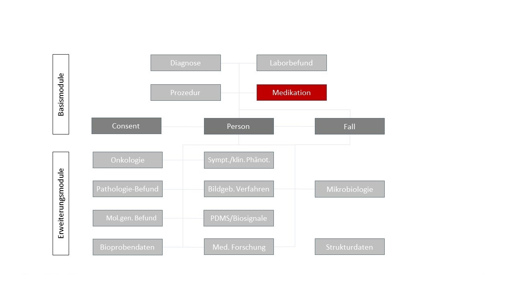

MII IG Medikation
2027.0.0-ballot.rc1 -
Germany
MII IG Medikation
2027.0.0-ballot.rc1 -
Germany
MII IG Medikation - Local Development build (v2027.0.0-ballot.rc1) built by the FHIR (HL7® FHIR® Standard) Build Tools. See the Directory of published versions
| Official URL: https://www.medizininformatik-initiative.de/fhir/core/modul-medikation/ImplementationGuide/mii-ig-medikation | Version: 2027.0.0-ballot.rc1 | |||
| Active as of 2026-09-02 | Computable Name: MII_IG_Medikation | |||
This specification describes the FHIR representation of the Core Dataset (CDS) module Medikation of the Medical Informatics Initiative (MII). It covers the module's use cases and the associated FHIR profiles, extensions and terminology resources in their normative form. The MII Core Dataset enables the standardized secondary use of routine clinical data for medical research.
The Medikation module carries the data elements for documenting medication orders and administrations as well as medication plans. It is one of the base modules of the MII Core Dataset.
| Publication | |
|---|---|
| Date | 2026-09-02 |
| Version | 2027.0.0-ballot.rc1 (CalVer YYYY.n.n) |
| Status | active |
| Realm | DE |
Data Integration Centers (DIC), software developers and system architects building FHIR-based solutions.
→ see Profiles and Logical Models.
Scientists using KDS data for medical research.
→ see Guidance for Researchers.

The following types of documentation of medication processes can be distinguished, among others:
Medication information can range from the mere documentation that a preparation was given during an encounter, all the way to a detailed structured record of individual doses with coding of active ingredient, dose form, route of administration and dose according to internationally established standards.
Five sub-modules are available for documenting medication, according to their scope:
For medication information that demonstrably refers to whole packages via the PZN, the unit for the Medication instance is stated as follows:
"amount": {
"numerator": {
"value": 27,
"unit": "Tablet",
"system": "http://standardterms.edqm.eu",
"code": "10219000"
},
"denominator": {
"value": 1,
"unit": "Package",
"system": "http://unitsofmeasure.org",
"code": "1"
}
}

Combination packages can be represented straightforwardly by nesting Medication hierarchically, linking from Item.reference to other Medication instances. The "upper" Medication instance thus serves as the package hierarchy and as a container for the actual medication. It also carries the PZN of the combination package. The actual medication (the "sub-medication") is represented as a complete Medication instance — each without a PZN, with complete medication data including ASK and, where applicable, ATC.
For documenting medication events independent of an order or an administration — for example in medication plans, or where patients state their own medication.
A medication administration differs from a medication statement in that it carries fuller information about the administration, based on the actual administration data. A medication statement is therefore usually less specific. It does not prescribe documenting exactly when the medication was administered, only that a report of its intake exists — where information on time, amount or rate, or even the medicinal product itself, may be missing, incomplete or less precise. The information may come from the patient's memory, from a prescription, or from a medication list.
As a minimum, the active ingredient should be retrievable for a medication. At a further stage of expansion the following data elements should also be made available, depending on the source data:
The datasets in the module are structured so that information can be given at varying levels of detail according to the source data available.
To record medication plans, several medication statements can be grouped into a list. The kind of a medication statement can be further specified by the following codes; the flags are attached both to the individual statements and to a summarising list:
IHE Deutschland Fallkontext | E210 "stationäre Aufnahme"IHE Deutschland Fallkontext | E230 "stationäre Entlassung"IHE Deutschland Fallkontext | E200 "stationärer Aufenthalt"To represent dose changes during treatment, a new instance of the medication statement or request with the changed dosage must be created in each case. The treatment periods stated should then follow on from one another. For a medication request, MedicationRequest.priorPrescription can additionally link to the preceding order.
The medication administration is used to document a single administration at event level, where a patient takes a medication or has it administered in another way — taking a tablet, or a long-running infusion, for example. It is always linked to a specific patient and may in addition be linked to a specific encounter and to the underlying medication request. This resource covers the administration of all medications except vaccines.
A minimal form of documenting medication in hospital can be achieved by inpatient care providers on the basis of codes of the German procedure classification (OPS) for medications eligible for supplementary payment. Fully structured medication documentation additionally takes place routinely in intensive care units within the patient data management system (PDMS).
This module is part of the MII Core Dataset. It relates in particular to the modules Person, Fall, Prozedur and Diagnose — see Guidance for Implementers. Its formal dependencies are the German base profiles, the MII meta module, the IHE Germany terminology, the International Patient Summary and the Medication IG DE; the full list is in sushi-config.yaml and on the ImplementationGuide page.
More FHIR implementation guides can be found in the official FHIR IG Registry (source: FHIR/ig-registry).
This guide was created within the Medical Informatics Initiative and is subject, by its governance process, to the coordination procedure of the Interoperability Forum and the technical committees of HL7 Germany.
Questions about this publication can be asked on the HL7 FHIR Zulip chat.fhir.org in the german/mi-initiative stream. Comments and issues are welcome as Issues on GitHub.
© 2019+ TMF e. V., Charlottenstraße 42, 10117 Berlin
This work is licensed under the Creative Commons Attribution 4.0 International License (CC BY 4.0).
For the usage rights of the underlying FHIR technology, see the FHIR base specification.
Some of the code systems used are published and maintained by other organizations; the copyright of the respective publishers applies.
The content of this document is public. Please note that parts of this document are based on FHIR version R4, which is copyrighted by HL7 International.
Although this publication was prepared with the greatest care, the authors cannot accept any liability for direct or indirect damage that may arise from the content of this specification.